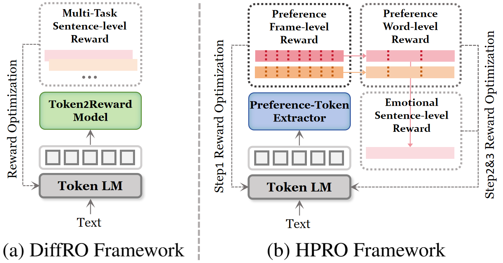
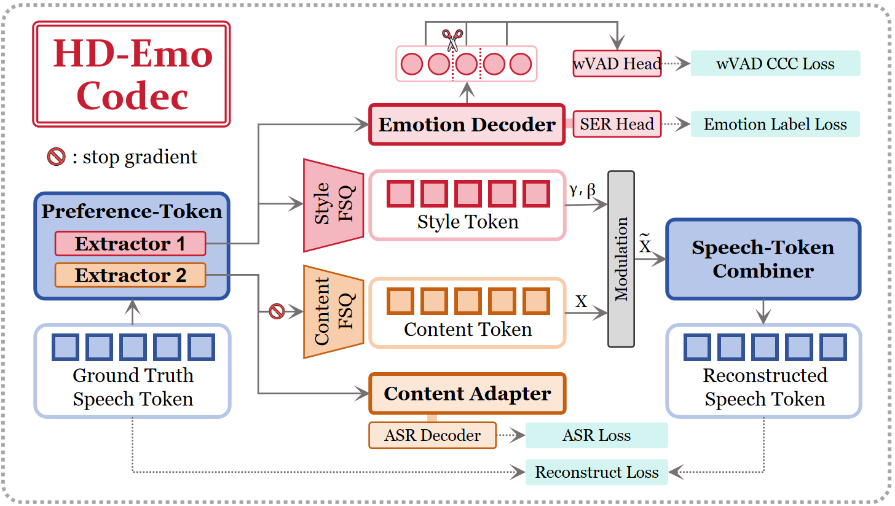
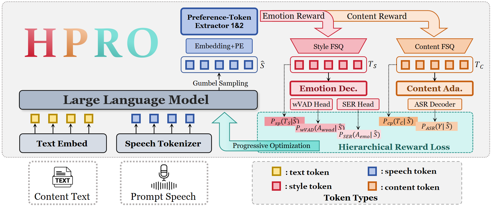

HPRO: Hierarchical Progressive Reward Optimization via
Preference Extraction for Emotional Text-to-Speech
Preference Extraction for Emotional Text-to-Speech
Anonymous submission to Interspeech 2026
Abstract
Recently, LLM-based Text-to-Speech (TTS) has achieved high naturalness. However, Supervised Fine-Tuning often converges to statistically averaged prosody, limiting emotional expressiveness. Preference-driven optimization offers a promising alternative, yet existing approaches suffer from two mismatches: information conflict, where content and emotion in a shared latent space produce conflicting gradients; and scale gap, where sparse sentence-level rewards struggle to guide dense frame-level generation. To address the information conflict, we introduce the HD-Emo codec as a differentiable reward model to extract distinct preference tokens, isolating emotional optimization from semantic sequences. To handle the scale gap, we propose HPRO, a hierarchical progressive reward optimization framework, employing the HD-Emo codec to progressively align frame-, word-, and sentence-level objectives. Experiments demonstrate that HPRO achieves high emotional expressiveness with robust stability.
Model Architecture

(b) HPRO Framework. Hierarchical progressive reward optimization for structured preference spaces.


Comparative Experiment
To demonstrate the effectiveness of our proposed approach, we conducted a comparative study of several popular TTS models.
The evaluated systems include:
- TokenRecon
- HPRO (Ours)
- CosyVoice2
- CosyVoice3
- IndexTTS2
- HD-PPT
Evaluation Metrics. For each generated audio sample, objective scores are reported following the metrics used in our paper:
- wVAD-CCC: Word-level Valence-Arousal-Dominance Concordance Correlation Coefficient.
- EMO-SIM: Emotion Similarity.
- DNSMOS: DNSMOS P.835.
* The scores are shown under each audio sample in the format: [wVAD-CCC, EMO-SIM, DNSMOS].
In the following examples, the Truth and Prompt audio for some samples feature different speakers. This setup demonstrates HPRO's ability to generate high-intensity emotional prosody purely guided by textual semantics, proving that the emotional expression stems from deep linguistic understanding rather than acoustic imitation of the reference prompt.
For a direct comparison, we also provide TokenRecon (as described in our paper), which reconstructs the ground-truth speech tokens using the reference prompt, serving as the theoretical upper bound for semantic-driven emotional expressiveness.
Sample 1
🎭 Emotion: Happy
🗣️ Prompt Text: "Just because you think you're right doesn't mean you are."
📝 Content Text: "The morning dew glittered like tiny diamonds, signaling a day filled with promise."
| Prompt | Truth |
|---|---|
| TokenRecon | HPRO | CosyVoice2 | CosyVoice3 | IndexTTS2 | HD-PPT |
|---|---|---|---|---|---|
[0.514, 1.00, 3.98] |
[0.406, 0.72, 3.97] |
[0.380, 0.95, 3.86] |
[0.125, 0.03, 3.80] |
[0.174, 0.00, 3.95] |
[0.513, 0.20, 3.96] |
Sample 2
🎭 Emotion: Happy
🗣️ Prompt Text: "The sight of the empty stage left us baffled. The performer was missing."
📝 Content Text: "Oh, wow. Did you see how cute the puppies are? Just heartwarming."
| Prompt | Truth |
|---|---|
| TokenRecon | HPRO | CosyVoice2 | CosyVoice3 | IndexTTS2 | HD-PPT |
|---|---|---|---|---|---|
[0.769, 1.00, 4.13] |
[0.403, 1.00, 3.95] |
[0.332, 1.00, 3.74] |
[0.418, 1.00, 3.57] |
[0.340, 1.00, 3.57] |
[0.327, 1.00, 4.01] |
Sample 3
🎭 Emotion: Angry
🗣️ Prompt Text: "The old Swinset creaked, echoing years of forgotten laughter and play."
📝 Content Text: "He slammed a door with a force that echoed his simmering rage."
| Prompt | Truth |
|---|---|
| TokenRecon | HPRO | CosyVoice2 | CosyVoice3 | IndexTTS2 | HD-PPT |
|---|---|---|---|---|---|
[0.388, 0.09, 4.13] |
[0.239, 1.00, 4.03] |
[0.258, 0.00, 4.38] |
[0.262, 0.00, 4.20] |
[0.869, 1.00, 3.57] |
[0.314, 1.00, 3.98] |
Sample 4
🎭 Emotion: Angry
🗣️ Prompt Text: "Why are you yelling at me for something that wasn't even my idea? Why? Why?"
📝 Content Text: "How many times do we have to go over this?"
| Prompt | Truth |
|---|---|
| TokenRecon | HPRO | CosyVoice2 | CosyVoice3 | IndexTTS2 | HD-PPT |
|---|---|---|---|---|---|
[0.603, 0.35, 3.57] |
[0.211, 0.94, 3.97] |
[0.005, 0.52, 3.84] |
[-0.207, 0.35, 3.35] |
[0.160, 0.42, 3.39] |
[0.453, 0.35, 4.04] |
Sample 5
🎭 Emotion: Surprised
🗣️ Prompt Text: "How can you be so consistently unreliable?"
📝 Content Text: "Wait, the train's arriving on time for once? That's unheard of!"
| Prompt | Truth |
|---|---|
| TokenRecon | HPRO | CosyVoice2 | CosyVoice3 | IndexTTS2 | HD-PPT |
|---|---|---|---|---|---|
[0.444, 0.70, 4.10] |
[0.561, 0.82, 4.02] |
[0.153, 0.81, 3.93] |
[0.042, 0.78, 4.20] |
[0.333, 0.71, 3.42] |
[0.087, 0.74, 4.07] |
Sample 6
🎭 Emotion: Surprised
🗣️ Prompt Text: "Our fleet of pastel clouds sailed across the sky, painting expressions of tranquil bliss."
📝 Content Text: "Look, a double rainbow stretching across the entire sky!"
| Prompt | Truth |
|---|---|
| TokenRecon | HPRO | CosyVoice2 | CosyVoice3 | IndexTTS2 | HD-PPT |
|---|---|---|---|---|---|
[0.456, 0.03, 3.98] |
[0.266, 0.98, 3.89] |
[0.351, 0.02, 3.90] |
[0.364, 0.36, 3.83] |
[0.113, 1.00, 3.53] |
[0.444, 0.03, 4.09] |
Sample 7
🎭 Emotion: Sad
🗣️ Prompt Text: "Why does it always feel like the world is ending when the sun sets like this?"
📝 Content Text: "She said nothing, but her silence screamed volumes."
| Prompt | Truth |
|---|---|
| TokenRecon | HPRO | CosyVoice2 | CosyVoice3 | IndexTTS2 | HD-PPT |
|---|---|---|---|---|---|
[0.927, 1.00, 3.93] |
[0.326, 0.00, 3.98] |
[-0.260, 0.00, 3.90] |
[0.155, 0.11, 4.08] |
[0.248, 0.00, 3.53] |
[0.422, 0.00, 3.89] |
Sample 8
🎭 Emotion: Fearful
🗣️ Prompt Text: "Crashed underfoot, a reminder of what was, but is no longer."
📝 Content Text: "Is that sound supposed to be coming from the attic?"
| Prompt | Truth |
|---|---|
| TokenRecon | HPRO | CosyVoice2 | CosyVoice3 | IndexTTS2 | HD-PPT |
|---|---|---|---|---|---|
[0.599, 1.00, 3.85] |
[0.616, 0.00, 4.07] |
[0.284, 0.99, 3.70] |
[0.509, 0.99, 3.71] |
[0.335, 0.28, 3.71] |
[0.247, 1.00, 3.85] |
Sample 9
🎭 Emotion: Neutral
🗣️ Prompt Text: "Um at that happened quick, he didn't know with time who knows."
📝 Content Text: "Because how could you say that to, you know, a child you know, but she didn't know any better, you know what I mean, she"
| Prompt | Truth |
|---|---|
| TokenRecon | HPRO | CosyVoice2 | CosyVoice3 | IndexTTS2 | HD-PPT |
|---|---|---|---|---|---|
[0.669, 1.00, 3.84] |
[0.452, 1.00, 3.66] |
[0.461, 0.01, 3.61] |
[0.437, 0.00, 4.06] |
[0.043, 0.03, 3.53] |
[0.506, 1.00, 3.95] |